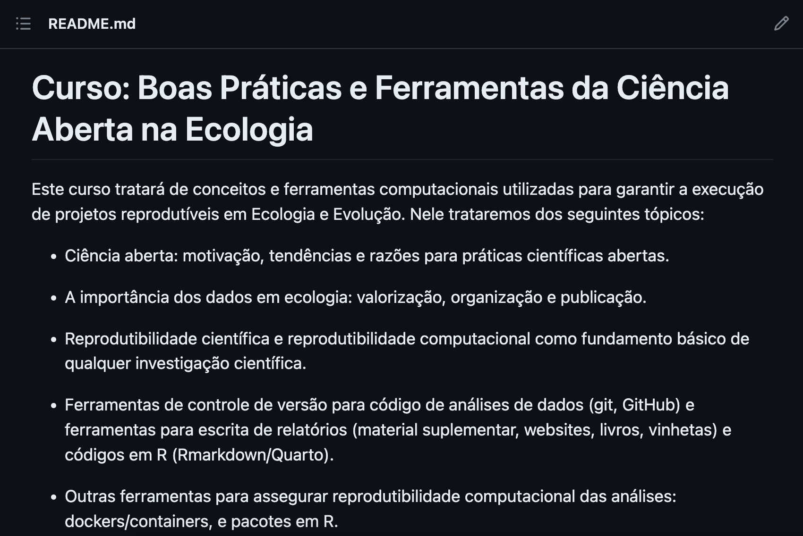
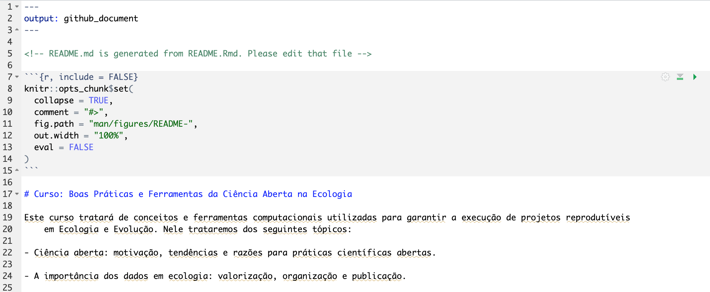

Organização - questão de estilo?
“Eu me acho na minha bagunça”, quem já ouviu essa frase, ou já
pronunciou? Provavelmente todos nós. Mas o conceito de
organização seria mesmo uma questão pessoal? Podemos
discutir isso durante horas a fio se estivermos falando do seu quarto,
da sua estante ou do seu guarda-roupa, mas quando falamos de ciência, ou
seja, uma atividade coletiva, organização não é uma
questão pessoal, justamente por ser coletiva. Sempre trabalhamos em
conjunto, e isso pode ser com um grupo composto por muitas pessoas que
trabalham em um determinado projeto, ou pode ser consigo mesmo, o seu eu
do futuro. Desta maneira, é necessário que tudo que foi utilizado para o
desenvolvimento do seu projeto científico seja de fácil compreensão para
seus colaboradores ou para o seu “eu” do futuro.
Dados necessários para as práticas
Nesta seção vamos utilizar os dados do pacote
{palmerpenguins}. Que apesar de estar disponível como
pacote, portanto poderia ser lido automáticamente apenas baixando o
pacote, vamos importar os dados a partir do nosso computador. Vamos
fazer isso pois assim podemos demonstrar boas práticas na leitura de
dados, scripts e organização do nosso repositório local de maneira
geral. Os dados do pacote já estão no repositório que baixaram. Mais
adiante vamos utilizá-lo, mas antes vamos ver esquemas gerais de
organização de repositório local
Um esquema geral (mas não absoluto) para organização do diretório
local
Nessa seção irei mostrar uma proposta de esquema geral para
organização de diretórios. Essa estrutura é baseada nesta proposta do Gustavo
Paterno.
Digo que não é absoluto pois modificações nesse esquema podem ser
feita para ajustar ao conjunto de dados de cada pessoa. A Ecologia é um
campo muito amplo de pesquisa, e nem todos os dados se ajustarão
perfeitamente a esta proposta. O mais importante de tudo é que os dados
estejam organizados de uma maneira intuitiva e
consistente no diretório, como o na figura
seguinte.
Mas, qual a lógica por trás da organização desse diretório? Seguimos
a proposta presente na figura seguinte (original
pode ser visto aqui).
Nesta proposta os arquivos dentro de um projeto são organizados em 4
pastas que contemplam quase todos os documentos que geramos ou que
precisamos quando estamos desenvolvendo um projeto científico.
Nomeando arquivos
Uma boa regra a ser seguida:
Human + Machine redable
Exemplo:
Nomeando scripts
Pessoalmente eu utilizo o seguinte esquema
número_letra-maiúscula_descrição.R
número: usado para indicar a sequência de execução dos
scripts
letra maiúscula: Código que indica o que o script faz. Uso a
seguinte notação
C (Clean) leitura e limpeza/processamento de dadosD (Do) análisesS (Show) gráficos/figuras
descrição: uma breve descrição sobre o que o script faz
especificamente (e.g. glm)
O README
O README é uma das partes mais importantes do seu diretório, ele é
escrito em caixa alta justamente para que a pessoa que esteja acesssando
o seu diretório ouça em voz alta Me leia por
favor!!.
Neste arquivo de texto você irá encontrar as principais instruções
sobre a estrutura do diretório, incluindo os nomes das pessoas que
montaram o diretório, além de instruções básicas sobre o que contém em
cada pasta. Aqui você pode
encontrar dicas de como o README contendo as informações básicas
necessárias que ele deve conter e porque. Aqui
um template que pode ser adaptado para os seus propósitos. Aqui
algumas dicas interessantes em português.
É importante saber que você não irá encontrar o modelo final para o
README perfeito. Os detalhes de cada README vão variar dependendo do
projeto que está desenvolvendo e a forma como ele deve ser apresentado
ao usuário. Por exemplo, se o projeto se trata de um repositório de
arquivos e scripts de um manuscrito, e não de um README de um projeto de
software, não precisa haver alguns campos de explicação, tais como
exemplo de uso ou antigas versões de lançamento. Aqui coloco um checklist
adaptado de itens que julgo essenciais para um README informativo.
Pense no seu trabalho, adicione ou edite esse checklist de acordo com
seus propósitos.
Minha proposta de checklist:
Iniciando o README
Duas opções para montar o arquivo README. Primeira, montar você
mesmo. O arquivo pode ser montado em um bloco de notas e deve ser
nomeado como README.md. A extensão .md é
importante aqui, ela significa que é um arquivo do tipo
Markdown. Neste momento é importante saber que o
arquivo Markdown é apenas uma linguagem de marcação. Vamos abordar em
detalhes como elaborar documentos em Markdown, como este que lê neste
momento, mais adiante. Por hora é relevante saber que o README deve ser
em markdown pois assim o GitHub idenfica corretamente este documento
como sendo o arquivo a ser exibido na página inicial do repositório
remoto, como ilustrado na figura abaixo.

Arquivo README correspondente ao repositório
deste site
Na realidade, o arquivo fonte tem essa aparência

Arquivo fonte para o README acima mostrado
Mostro como podemos montar um README nesta seção. Por
enquanto vamos fazer o mais simples.
1- Abra um editor de texto (recomendo o Atom, mas o
editor nativo do seu computador funciona bem também).
2- Digite qualquer título na primeira linha que se inicie com
# Meu Título.
3- Salve o arquivo com o nome de README.md em algum
local do seu computador. Por enquanto é isso.
Ferramentas para organização do diretório local
Pacotes para inicialização automática (alternativa)
Alguns pacotes auxiliam montar automaticamente a organização do seu
diretório local, por exemplo essa ferramenta elaborado pelo
Carl Boettiger e essa
do Francisco Rodriguez-Sanchez.
Vamos explorar um pouco a funcionalidade do pacote
{template}. Para tanto precisamos primeiro instalar o
pacote que está hospedado no GitHub.
# install.packages("remotes")
remotes::install_github("Pakillo/template")
Em seguida vamos ler o pacote e iniciar um novo projeto
library("template")
new_project(name = "treegrowth", path = "caminho/para/diretório")
O diretório será iniciado no local indicado pelo argumento
path na função new_project.
Here
O {here} é o melhor pacote para padronizar caminhos.
Sabe aquele erro de leitura dos dados por conta de um / ou
\, ou por ter esquecido ou errado na digitação daquele
caminho gigantesco para o arquivo desejado? Com o {here}
nada disso vai acontecer.
Para demonstrar o uso do pacote here vamos ler os dados
palmer-penguins.txt para o R. Lembrando, abra o R a partir
do .Rproject dentro do diretório que iniciamos nos passos anteriores
# caso não tenha o here instalado ainda
# install.packages("here")
library(here)
Da forma convencional poderíamos ler esse dado da seguinte forma
data_penguins <- read.csv("/Users/gabrielnakamura/OneDrive/Disciplina_Praticas_ferramentas_gestao_dados/USP_reproducibility_BIE5791/data/data-penguins.csv")
Será que você consegue reproduzir essa simples leitura de dados
usando o mesmo código acima? Tente..
Após a tentativa fica claro que não é possível realizar essa leitura
de dados. Mas vamos lembrar que temos o projeto que enraiza nossa pasta,
então podemos apenas usar o seguinte código
data_penguins <- read.csv("data/data-penguins.csv")
Funcionou? Ou apenas para alguns?
Imagino que pode ter funcionado para todos que tem o computador onde
a máquina reconhece / como separador de caminhos, porém,
aqueles que precisa de \ para informar a separação dos
caminhos não deve ter tido sucesso. Como resolvemos isso?
Aí entra o here. Com o pacote here podemos usar simplesmente o
seguinte código
library(here)
data_penguins <- read.csv(here("data", "data-pengins.csv"))
Note que ao invés de usarmos o caminho, usamos dentro da função
here o nome das pastas que levam até o arquivo que
desejamos abrir, bem como o nome deste arquivo. Garanto que agora isso
irá funcionar com todos
LS0tCnRpdGxlOiAiT3JnYW5pemFuZG8gbyBzZXUgdHJhYmFsaG8gbG9jYWxtZW50ZSIKYXV0aG9yOiAiR2FicmllbCBOYWthbXVyYSIKZGF0ZTogImByIFN5cy5EYXRlKClgIgpvdXRwdXQ6IGh0bWxfZG9jdW1lbnQKLS0tCgpgYGB7ciBzZXR1cCwgaW5jbHVkZT1GQUxTRX0Ka25pdHI6Om9wdHNfY2h1bmskc2V0KGVjaG8gPSBUUlVFKQpgYGAKCiMgT3JnYW5pemHDp8OjbyAtIHF1ZXN0w6NvIGRlIGVzdGlsbz8KCiJFdSBtZSBhY2hvIG5hIG1pbmhhIGJhZ3Vuw6dhIiwgcXVlbSBqw6Egb3V2aXUgZXNzYSBmcmFzZSwgb3UgasOhIHByb251bmNpb3U/IFByb3ZhdmVsbWVudGUgdG9kb3MgbsOzcy4gTWFzIG8gY29uY2VpdG8gZGUgKipvcmdhbml6YcOnw6NvKiogc2VyaWEgbWVzbW8gdW1hIHF1ZXN0w6NvIHBlc3NvYWw/IFBvZGVtb3MgZGlzY3V0aXIgaXNzbyBkdXJhbnRlIGhvcmFzIGEgZmlvIHNlIGVzdGl2ZXJtb3MgZmFsYW5kbyBkbyBzZXUgcXVhcnRvLCBkYSBzdWEgZXN0YW50ZSBvdSBkbyBzZXUgZ3VhcmRhLXJvdXBhLCBtYXMgcXVhbmRvIGZhbGFtb3MgZGUgY2nDqm5jaWEsIG91IHNlamEsIHVtYSBhdGl2aWRhZGUgY29sZXRpdmEsIG9yZ2FuaXphw6fDo28gKipuw6NvKiogw6kgdW1hIHF1ZXN0w6NvIHBlc3NvYWwsIGp1c3RhbWVudGUgcG9yIHNlciBjb2xldGl2YS4gU2VtcHJlIHRyYWJhbGhhbW9zIGVtIGNvbmp1bnRvLCBlIGlzc28gcG9kZSBzZXIgY29tIHVtIGdydXBvIGNvbXBvc3RvIHBvciBtdWl0YXMgcGVzc29hcyBxdWUgdHJhYmFsaGFtIGVtIHVtIGRldGVybWluYWRvIHByb2pldG8sIG91IHBvZGUgc2VyIGNvbnNpZ28gbWVzbW8sIG8gc2V1IGV1IGRvIGZ1dHVyby4gRGVzdGEgbWFuZWlyYSwgw6kgbmVjZXNzw6FyaW8gcXVlIHR1ZG8gcXVlIGZvaSB1dGlsaXphZG8gcGFyYSBvIGRlc2Vudm9sdmltZW50byBkbyBzZXUgcHJvamV0byBjaWVudMOtZmljbyBzZWphIGRlIGbDoWNpbCBjb21wcmVlbnPDo28gcGFyYSBzZXVzIGNvbGFib3JhZG9yZXMgb3UgcGFyYSBvIHNldSAiZXUiIGRvIGZ1dHVyby4KCiMgRGFkb3MgbmVjZXNzw6FyaW9zIHBhcmEgYXMgcHLDoXRpY2FzIAoKTmVzdGEgc2XDp8OjbyB2YW1vcyB1dGlsaXphciBvcyBkYWRvcyBkbyBwYWNvdGUgYHtwYWxtZXJwZW5ndWluc31gLiBRdWUgYXBlc2FyIGRlIGVzdGFyIGRpc3BvbsOtdmVsIGNvbW8gcGFjb3RlLCBwb3J0YW50byBwb2RlcmlhIHNlciBsaWRvIGF1dG9tw6F0aWNhbWVudGUgYXBlbmFzIGJhaXhhbmRvIG8gcGFjb3RlLCB2YW1vcyBpbXBvcnRhciBvcyBkYWRvcyBhIHBhcnRpciBkbyBub3NzbyBjb21wdXRhZG9yLiBWYW1vcyBmYXplciBpc3NvIHBvaXMgYXNzaW0gcG9kZW1vcyBkZW1vbnN0cmFyIGJvYXMgcHLDoXRpY2FzIG5hIGxlaXR1cmEgZGUgZGFkb3MsIHNjcmlwdHMgZSBvcmdhbml6YcOnw6NvIGRvIG5vc3NvIHJlcG9zaXTDs3JpbyBsb2NhbCBkZSBtYW5laXJhIGdlcmFsLiBPcyBkYWRvcyBkbyBwYWNvdGUgasOhIGVzdMOjbyBubyByZXBvc2l0w7NyaW8gcXVlIGJhaXhhcmFtLiBNYWlzIGFkaWFudGUgdmFtb3MgdXRpbGl6w6EtbG8sIG1hcyBhbnRlcyB2YW1vcyB2ZXIgZXNxdWVtYXMgZ2VyYWlzIGRlIG9yZ2FuaXphw6fDo28gZGUgcmVwb3NpdMOzcmlvIGxvY2FsCgojIFVtIGVzcXVlbWEgZ2VyYWwgKG1hcyBuw6NvIGFic29sdXRvKSBwYXJhIG9yZ2FuaXphw6fDo28gZG8gZGlyZXTDs3JpbyBsb2NhbAoKTmVzc2Egc2XDp8OjbyBpcmVpIG1vc3RyYXIgdW1hIHByb3Bvc3RhIGRlIGVzcXVlbWEgZ2VyYWwgcGFyYSBvcmdhbml6YcOnw6NvIGRlIGRpcmV0w7NyaW9zLiBFc3NhIGVzdHJ1dHVyYSDDqSBiYXNlYWRhIG5lc3RhIHByb3Bvc3RhIGRvIFtHdXN0YXZvIFBhdGVybm9dKGh0dHBzOi8vZG9jcy5nb29nbGUuY29tL3ByZXNlbnRhdGlvbi9kLzFQeDlOcGFfQU5xbW1makNYbzlBLWVCbVd6Z1VtbWtDS2Q3ZkJJcV9nRzZrL2VkaXQjc2xpZGU9aWQuZzYyZmM2YmY3MmZfMF8xOTYpLgoKRGlnbyBxdWUgbsOjbyDDqSBhYnNvbHV0byBwb2lzIG1vZGlmaWNhw6fDtWVzIG5lc3NlIGVzcXVlbWEgcG9kZW0gc2VyIGZlaXRhIHBhcmEgYWp1c3RhciBhbyBjb25qdW50byBkZSBkYWRvcyBkZSBjYWRhIHBlc3NvYS4gQSBFY29sb2dpYSDDqSB1bSBjYW1wbyBtdWl0byBhbXBsbyBkZSBwZXNxdWlzYSwgZSBuZW0gdG9kb3Mgb3MgZGFkb3Mgc2UgYWp1c3RhcsOjbyBwZXJmZWl0YW1lbnRlIGEgZXN0YSBwcm9wb3N0YS4gTyBtYWlzIGltcG9ydGFudGUgZGUgdHVkbyDDqSBxdWUgb3MgZGFkb3MgZXN0ZWphbSBvcmdhbml6YWRvcyBkZSB1bWEgbWFuZWlyYSAqKmludHVpdGl2YSoqIGUgKipjb25zaXN0ZW50ZSoqIG5vIGRpcmV0w7NyaW8sIGNvbW8gbyBuYSBmaWd1cmEgc2VndWludGUuCgpgYGB7ciBlY2hvPUZBTFNFLGV2YWw9VFJVRSxmaWcuY2FwPSAiVW0gZGlyZXTDs3JpbyBtaW5pbWFtZW50ZSBvcmdhbml6YWRvIn0Ka25pdHI6OmluY2x1ZGVfZ3JhcGhpY3MoImZpZ3MvZGlyZWN0b3J5X29yZy5qcGciKQpgYGAKCk1hcywgcXVhbCBhIGzDs2dpY2EgcG9yIHRyw6FzIGRhIG9yZ2FuaXphw6fDo28gZGVzc2UgZGlyZXTDs3Jpbz8gU2VndWltb3MgYSBwcm9wb3N0YSBwcmVzZW50ZSBuYSBmaWd1cmEgc2VndWludGUgWyhvcmlnaW5hbCBwb2RlIHNlciB2aXN0byBhcXVpKV0oaHR0cHM6Ly9kb2NzLmdvb2dsZS5jb20vcHJlc2VudGF0aW9uL2QvMVB4OU5wYV9BTnFtbWZqQ1hvOUEtZUJtV3pnVW1ta0NLZDdmQklxX2dHNmsvZWRpdCNzbGlkZT1pZC5nNjJmYzZiZjcyZl8wXzcpLiAKCk5lc3RhIHByb3Bvc3RhIG9zIGFycXVpdm9zIGRlbnRybyBkZSB1bSBwcm9qZXRvIHPDo28gb3JnYW5pemFkb3MgZW0gNCBwYXN0YXMgcXVlIGNvbnRlbXBsYW0gcXVhc2UgdG9kb3Mgb3MgZG9jdW1lbnRvcyBxdWUgZ2VyYW1vcyBvdSBxdWUgcHJlY2lzYW1vcyBxdWFuZG8gZXN0YW1vcyBkZXNlbnZvbHZlbmRvIHVtIHByb2pldG8gY2llbnTDrWZpY28uCgpgYGB7ciBlY2hvPUZBTFNFLGV2YWw9VFJVRSxmaWcuY2FwPSJVbSBtb2RlbG8gZ2VyYWwgZGUgb3JnYW5pemHDp8OjbyBkbyBkaXJldMOzcmlvIGxvY2FsIn0Ka25pdHI6OmluY2x1ZGVfZ3JhcGhpY3MoImZpZ3MvdGVtcGxhdGVfZ2VuZXJhbC5qcGciKQpgYGAKCgojIyBOb21lYW5kbyBhcnF1aXZvcwoKVW1hIGJvYSByZWdyYSBhIHNlciBzZWd1aWRhOiAKCioqSHVtYW4gKyBNYWNoaW5lIHJlZGFibGUqKgoKRXhlbXBsbzoKCmBgYHtyIGVjaG89RkFMU0UsZXZhbD1GQUxTRX0Ka25pdHI6OmluY2x1ZGVfZ3JhcGhpY3MoaGVyZTo6aGVyZSgiZmlncyIsICJuYW1pbmctZmlsZXMtZGF0YS5wbmciKSkKYGBgCgojIyBOb21lYW5kbyBzY3JpcHRzCgpQZXNzb2FsbWVudGUgZXUgdXRpbGl6byBvIHNlZ3VpbnRlIGVzcXVlbWEKCioqbsO6bWVyb19sZXRyYS1tYWnDunNjdWxhX2Rlc2NyacOnw6NvLlIqKgoKLSBuw7ptZXJvOiB1c2FkbyBwYXJhIGluZGljYXIgYSBzZXF1w6puY2lhIGRlIGV4ZWN1w6fDo28gZG9zIHNjcmlwdHMKCi0gbGV0cmEgbWFpw7pzY3VsYTogQ8OzZGlnbyBxdWUgaW5kaWNhIG8gcXVlIG8gc2NyaXB0IGZhei4gVXNvIGEgc2VndWludGUgbm90YcOnw6NvCiAgICArIGBDYCAoQ2xlYW4pIGxlaXR1cmEgZSBsaW1wZXphL3Byb2Nlc3NhbWVudG8gZGUgZGFkb3MKICAgICsgYERgIChEbykgYW7DoWxpc2VzCiAgICArIGBTYCAoU2hvdykgZ3LDoWZpY29zL2ZpZ3VyYXMKCi0gZGVzY3Jpw6fDo286IHVtYSBicmV2ZSBkZXNjcmnDp8OjbyBzb2JyZSBvIHF1ZSBvIHNjcmlwdCBmYXogZXNwZWNpZmljYW1lbnRlIChlLmcuIGdsbSkKCiMjIE8gUkVBRE1FCgpPIFJFQURNRSDDqSB1bWEgZGFzIHBhcnRlcyBtYWlzIGltcG9ydGFudGVzIGRvIHNldSBkaXJldMOzcmlvLCBlbGUgw6kgZXNjcml0byBlbSBjYWl4YSBhbHRhIGp1c3RhbWVudGUgcGFyYSBxdWUgYSBwZXNzb2EgcXVlIGVzdGVqYSBhY2Vzc3NhbmRvIG8gc2V1IGRpcmV0w7NyaW8gb3XDp2EgZW0gdm96IGFsdGEgKipNZSBsZWlhIHBvciBmYXZvciEhKiouCgpOZXN0ZSBhcnF1aXZvIGRlIHRleHRvIHZvY8OqIGlyw6EgZW5jb250cmFyIGFzIHByaW5jaXBhaXMgaW5zdHJ1w6fDtWVzIHNvYnJlIGEgZXN0cnV0dXJhIGRvIGRpcmV0w7NyaW8sIGluY2x1aW5kbyBvcyBub21lcyBkYXMgcGVzc29hcyBxdWUgbW9udGFyYW0gbyBkaXJldMOzcmlvLCBhbMOpbSBkZSBpbnN0cnXDp8O1ZXMgYsOhc2ljYXMgc29icmUgbyBxdWUgY29udMOpbSBlbSBjYWRhIHBhc3RhLiBbQXF1aSB2b2PDqiBwb2RlIGVuY29udHJhciBkaWNhcyBkZSBjb21vIG8gUkVBRE1FIGNvbnRlbmRvIGFzIGluZm9ybWHDp8O1ZXMgYsOhc2ljYXMgbmVjZXNzw6FyaWFzIHF1ZSBlbGUgZGV2ZSBjb250ZXIgZSBwb3JxdWVdKGh0dHBzOi8vd3d3Lm1ha2VhcmVhZG1lLmNvbS8pLiBbQXF1aSB1bSB0ZW1wbGF0ZSBxdWUgcG9kZSBzZXIgYWRhcHRhZG8gcGFyYSBvcyBzZXVzIHByb3DDs3NpdG9zXShodHRwczovL2dpdGh1Yi5jb20vamVobmEvcmVhZG1lLWJlc3QtcHJhY3RpY2VzL2Jsb2IvbWFzdGVyL1JFQURNRS1kZWZhdWx0Lm1kKS4gW0FxdWkgYWxndW1hcyBkaWNhcyBpbnRlcmVzc2FudGVzIGVtIHBvcnR1Z3XDqnNdKGh0dHBzOi8vYmxvZy5yb2NrZXRzZWF0LmNvbS5ici9jb21vLWZhemVyLXVtLWJvbS1yZWFkbWUvKS4KCsOJIGltcG9ydGFudGUgc2FiZXIgcXVlIHZvY8OqIG7Do28gaXLDoSBlbmNvbnRyYXIgbyBtb2RlbG8gZmluYWwgcGFyYSBvIFJFQURNRSBwZXJmZWl0by4gT3MgZGV0YWxoZXMgZGUgY2FkYSBSRUFETUUgdsOjbyB2YXJpYXIgZGVwZW5kZW5kbyBkbyBwcm9qZXRvIHF1ZSBlc3TDoSBkZXNlbnZvbHZlbmRvIGUgYSBmb3JtYSBjb21vIGVsZSBkZXZlIHNlciBhcHJlc2VudGFkbyBhbyB1c3XDoXJpby4gUG9yIGV4ZW1wbG8sIHNlIG8gcHJvamV0byBzZSB0cmF0YSBkZSB1bSByZXBvc2l0w7NyaW8gZGUgYXJxdWl2b3MgZSBzY3JpcHRzIGRlIHVtIG1hbnVzY3JpdG8sIGUgbsOjbyBkZSB1bSBSRUFETUUgZGUgdW0gcHJvamV0byBkZSBzb2Z0d2FyZSwgbsOjbyBwcmVjaXNhIGhhdmVyIGFsZ3VucyBjYW1wb3MgZGUgZXhwbGljYcOnw6NvLCB0YWlzIGNvbW8gZXhlbXBsbyBkZSB1c28gb3UgYW50aWdhcyB2ZXJzw7VlcyBkZSBsYW7Dp2FtZW50by4gQXF1aSBjb2xvY28gdW0gWypjaGVja2xpc3QqIGFkYXB0YWRvXShodHRwczovL2dpdGh1Yi5jb20vaGFja2VyZ3JybC9hcnQtb2YtcmVhZG1lL2VkaXQvbWFzdGVyL1JFQURNRS1wdC1CUi5tZCkgZGUgaXRlbnMgcXVlIGp1bGdvIGVzc2VuY2lhaXMgcGFyYSB1bSBSRUFETUUgaW5mb3JtYXRpdm8uIFBlbnNlIG5vIHNldSB0cmFiYWxobywgYWRpY2lvbmUgb3UgZWRpdGUgZXNzZSBjaGVja2xpc3QgZGUgYWNvcmRvIGNvbSBzZXVzIHByb3DDs3NpdG9zLgoKTWluaGEgcHJvcG9zdGEgZGUgY2hlY2tsaXN0OgoKLSBbIF0gVW1hIGxpbmhhIGV4cGxpY2FuZG8gbyBwcm9ww7NzaXRvIGRvIHJlcG9zaXTDs3JpbyAKLSBbIF0gQXV0b3JlcyBkbyByZXBvc2l0w7NyaW8KLSBbIF0gTGlnYcOnw7VlcyBlIGNvbnRleHR1YWxpemHDp8O1ZXMgbmVjZXNzw6FyaWFzIChwb3IgZXhlbXBsbywgc2UgbyByZXBvc2l0w7NyaW8gZXN0w6EgbGlua2FkbyBhIHVtIGFydGlnbykKLSBbIF0gYmFkZ2VzIChvcGNpb25hbCkKLSBbIF0gSW5zdHJ1w6fDtWVzIGRlIGluc3RhbGHDp8OjbyAob3UgZG93bmxvYWQgc2UgZm9yIHVtIHJlcG8pCi0gWyBdIEV4ZW1wbG8gZGUgdXRpbGl6YcOnw6NvIGNsYXJvIGUgKmV4ZWN1dMOhdmVsKiAoc2UgZXN0aXZlcm1vcyBmYWxhbmRvIGRlIHVtYSBiYXNlIGRlIGRhZG9zIG91IHBhY290ZSkKLSBbIF0gRXN0cnV0dXJhIGRlIHBhc3RhcyBlIHNjcmlwdHMgKG8gcXVlIGNhZGEgcGFzdGEgY29udMOpbSwgbyBxdWUgY2FkYSBzY3JpcHQgZmF6KQotIFsgXSBTdGF0dXMgZG8gcHJvamV0byAoZmluYWxpemFkby9lbSBhbmRhbWVudG8pCi0gWyBdIEVtIGNhc28gZGUgcHJvYmxlbWEgY29tIGFsZ28gbm8gcmVwb3NpdMOzcmlvLCBjb21vIHJlcG9ydGFyIChVc2FyIG8gR2l0SHViIGlzc3VlcyDDqSB1bWEgYm9hIGlkZWlhKQotIFsgXSBMaWNlbsOnYQoKIyMgSW5pY2lhbmRvIG8gUkVBRE1FCgpEdWFzIG9ww6fDtWVzIHBhcmEgbW9udGFyIG8gYXJxdWl2byBSRUFETUUuIFByaW1laXJhLCBtb250YXIgdm9jw6ogbWVzbW8uIE8gYXJxdWl2byBwb2RlIHNlciBtb250YWRvIGVtIHVtIGJsb2NvIGRlIG5vdGFzIGUgZGV2ZSBzZXIgbm9tZWFkbyBjb21vIGBSRUFETUUubWRgLiBBIGV4dGVuc8OjbyBgLm1kYCDDqSBpbXBvcnRhbnRlIGFxdWksIGVsYSBzaWduaWZpY2EgcXVlIMOpIHVtIGFycXVpdm8gZG8gdGlwbyAqKk1hcmtkb3duKiouIE5lc3RlIG1vbWVudG8gw6kgaW1wb3J0YW50ZSBzYWJlciBxdWUgbyBhcnF1aXZvIE1hcmtkb3duIMOpIGFwZW5hcyB1bWEgbGluZ3VhZ2VtIGRlIG1hcmNhw6fDo28uIFZhbW9zIGFib3JkYXIgZW0gZGV0YWxoZXMgY29tbyBlbGFib3JhciBkb2N1bWVudG9zIGVtIE1hcmtkb3duLCBjb21vIGVzdGUgcXVlIGzDqiBuZXN0ZSBtb21lbnRvLCBtYWlzIGFkaWFudGUuIFBvciBob3JhIMOpIHJlbGV2YW50ZSBzYWJlciBxdWUgbyBSRUFETUUgZGV2ZSBzZXIgZW0gbWFya2Rvd24gcG9pcyBhc3NpbSBvIEdpdEh1YiBpZGVuZmljYSBjb3JyZXRhbWVudGUgZXN0ZSBkb2N1bWVudG8gY29tbyBzZW5kbyBvIGFycXVpdm8gYSBzZXIgZXhpYmlkbyBuYSBww6FnaW5hIGluaWNpYWwgZG8gcmVwb3NpdMOzcmlvIHJlbW90bywgY29tbyBpbHVzdHJhZG8gbmEgZmlndXJhIGFiYWl4by4KCmBgYHtyIGVjaG89RkFMU0UsZXZhbD1UUlVFLGZpZy5jYXA9IkFycXVpdm8gUkVBRE1FIGNvcnJlc3BvbmRlbnRlIGFvIHJlcG9zaXTDs3JpbyBkZXN0ZSBzaXRlIn0Ka25pdHI6OmluY2x1ZGVfZ3JhcGhpY3MoImZpZ3MvcmVhZG1lLWV4ZW1wbG8ucG5nIikKYGBgCgpOYSByZWFsaWRhZGUsIG8gYXJxdWl2byBmb250ZSB0ZW0gZXNzYSBhcGFyw6puY2lhCgpgYGB7ciBlY2hvPUZBTFNFLGV2YWw9VCxmaWcuY2FwPSJBcnF1aXZvIGZvbnRlIHBhcmEgbyBSRUFETUUgYWNpbWEgbW9zdHJhZG8ifQprbml0cjo6aW5jbHVkZV9ncmFwaGljcygiZmlncy9yZWFkbWUtc291cmNlLWV4LnBuZyIpCmBgYAoKTW9zdHJvIGNvbW8gcG9kZW1vcyBtb250YXIgdW0gUkVBRE1FIFtuZXN0YSBzZcOnw6NvXSgpLiBQb3IgZW5xdWFudG8gdmFtb3MgZmF6ZXIgbyBtYWlzIHNpbXBsZXMuCgoxLSBBYnJhIHVtIGVkaXRvciBkZSB0ZXh0byAocmVjb21lbmRvIG8gW0F0b21dKGh0dHBzOi8vZ2l0aHViLmJsb2cvMjAyMi0wNi0wOC1zdW5zZXR0aW5nLWF0b20vKSwgbWFzIG8gZWRpdG9yIG5hdGl2byBkbyBzZXUgY29tcHV0YWRvciBmdW5jaW9uYSBiZW0gdGFtYsOpbSkuIAoKMi0gRGlnaXRlIHF1YWxxdWVyIHTDrXR1bG8gbmEgcHJpbWVpcmEgbGluaGEgcXVlIHNlIGluaWNpZSBjb20gYCMgTWV1IFTDrXR1bG9gLiAKCjMtIFNhbHZlIG8gYXJxdWl2byBjb20gbyBub21lIGRlIGBSRUFETUUubWRgIGVtIGFsZ3VtIGxvY2FsIGRvIHNldSBjb21wdXRhZG9yLiBQb3IgZW5xdWFudG8gw6kgaXNzby4KCgojIEZlcnJhbWVudGFzIHBhcmEgb3JnYW5pemHDp8OjbyBkbyBkaXJldMOzcmlvIGxvY2FsCgojIyBJbmljaWFuZG8gdW0gcHJvamV0byBjb20gbyBSU3R1ZGlvCgpDb21vIHZpbW9zIG5hIGF1bGEgW3Rlw7NyaWNhXSgpLCBvIFJTdHVkaW8gcG9zc2liaWxpdGEgZW5yYWl6YXIgbyBwcm9qZXRvLCBkZXN0YSBmb3JtYSBuw6NvIHByZWNpc2Ftb3MgdXRpbGl6YXIgY2FtaW5ob3MgYWJzb2x1dG9zLCB0b3JuYW5kbyBub3NzYSB2aWRhIG1haXMgZsOhY2lsIGUgbyB0cmFiYWxobyBtYWlzIHJlcHJvZHV0w612ZWwgcGFyYSBxdWVtIHRlbnRhciB1dGlsaXphciBub3NzbyByZXBvc2l0w7NyaW8uIFBvcnRhbnRvLCBvIHByaW1laXJvIHBhc3NvIHZhaSBzZXIgaW5pY2lhciB1bSBub3ZvIHByb2pldG8gY29tIG8gUlN0dWRpby4gUGFyYSBpc3NvIGZhw6dhIG8gc2VndWludGU6CgoxLSBBYnJhIG8gUlN0dWRpbwoKMi0gRW0gYEFycXVpdm9gLCBzZWxlY2lvbmUgYE5vdm8gUHJvamV0b2AsIGNvbW8gbW9zdHJhZG8gYWJhaXhvCgpgYGB7ciBlY2hvPUZBTFNFLGV2YWw9VFJVRSxmaWcuY2FwPSJJbmljaWFuZG8gdW0gcHJvamV0byIsb3V0LndpZHRoPSI4MCUifQprbml0cjo6aW5jbHVkZV9ncmFwaGljcygiZmlncy9uZXctcHJvamVjdC1maWcxLnBuZyIpCmBgYAoKMy0gTmEgamFuZWxhIHF1ZSBzZSBhYnJpdSBzZWxlY2lvbmUgYE5vdm8gRGlyZXTDs3Jpb2AgcGFyYSBpbmljaWFyIG8gcHJvamV0byBlbSB1bSBkaXJldMOzcmlvIG5vdm8KCmBgYHtyIGVjaG89RkFMU0UsZXZhbD1UUlVFLGZpZy5jYXA9IkluaWNpYW5kbyB1bSBwcm9qZXRvIGVtIHVtIG5vdm8gZGlyZXTDs3JpbyIsb3V0LndpZHRoPSI4MCUifQprbml0cjo6aW5jbHVkZV9ncmFwaGljcygiZmlncy9uZXctcHJvamVjdC1maWcyLnBuZyIpCmBgYAoKNC0gRXNjb2xoYSBvIHRpcG8gZGUgcHJvamV0bywgbmVzdGUgY2FzbyBgbm92byBwcm9qZXRvYCAoc2UgYXBlbmFzIHVtIHByb2pldG8sIG91IHVtIHBhY290ZSBvdSB1bSBhcGxpY2F0aXZvIHNoaW55KQoKYGBge3IgZWNobz1GQUxTRSxldmFsPVRSVUUsb3V0LndpZHRoPSI4MCUifQprbml0cjo6aW5jbHVkZV9ncmFwaGljcygiZmlncy9uZXctcHJvamVjdC1maWczLnBuZyIpCmBgYAoKNS0gUG9yIGZpbSBlc2NvbGhhIG8gbm9tZSBwYXJhIG8gZGlyZXTDs3JpbyBlIG9uZGUgZWxlIHZhaSBlc3RhciBubyBzZXUgY29tcHV0YWRvcgoKYGBge3IgZWNobz1GQUxTRSxldmFsPVRSVUUsb3V0LndpZHRoPSI4MCUifQprbml0cjo6aW5jbHVkZV9ncmFwaGljcygiZmlncy9uZXctcHJvamVjdC1maWc0LnBuZyIpCmBgYAoKUHJvbnRvLCB1bWEgbm92YSBqYW5lbGEgZG8gUlN0dWRpbyBzZSBhYnJpcsOhLCBpbmRpY2FuZG8gcXVlIHNldSBwcm9qZXRvIGZvaSBpbmljaWFkbyBjb20gc3VjZXNzby4gQSBwYXJ0aXIgZGUgYWdvcmEsIHBhcmEgYWJyaXIgbyBSIGUgcmVhbGl6YXIgbW9kaWZpY2HDp8O1ZXMgZGUgc2NyaXB0cyBiYXN0YSBjbGljYXIgbm8gYXJxdWl2byAgYC5SUHJvamVjdGAgcXVlIGxldmEgbyBub21lIHF1ZSBkZXUgYW8gZGlyZXTDs3Jpby4gCgojIyBQYWNvdGVzIHBhcmEgaW5pY2lhbGl6YcOnw6NvIGF1dG9tw6F0aWNhIChhbHRlcm5hdGl2YSkKCkFsZ3VucyBwYWNvdGVzIGF1eGlsaWFtIG1vbnRhciBhdXRvbWF0aWNhbWVudGUgYSBvcmdhbml6YcOnw6NvIGRvIHNldSBkaXJldMOzcmlvIGxvY2FsLCBwb3IgZXhlbXBsbyBlc3NhIFtmZXJyYW1lbnRhIGVsYWJvcmFkbyBwZWxvIENhcmwgQm9ldHRpZ2VyXShodHRwczovL2dpdGh1Yi5jb20vY2JvZXR0aWcvdGVtcGxhdGUpIGUgW2Vzc2EgZG8gRnJhbmNpc2NvIFJvZHJpZ3Vlei1TYW5jaGV6XShodHRwczovL2dpdGh1Yi5jb20vUGFraWxsby90ZW1wbGF0ZSkuIAoKVmFtb3MgZXhwbG9yYXIgdW0gcG91Y28gYSBmdW5jaW9uYWxpZGFkZSBkbyBwYWNvdGUgYHt0ZW1wbGF0ZX1gLiBQYXJhIHRhbnRvIHByZWNpc2Ftb3MgcHJpbWVpcm8gaW5zdGFsYXIgbyBwYWNvdGUgcXVlIGVzdMOhIGhvc3BlZGFkbyBubyBHaXRIdWIuCgpgYGB7ciBlY2hvPVQsZXZhbD1GQUxTRX0KIyBpbnN0YWxsLnBhY2thZ2VzKCJyZW1vdGVzIikKcmVtb3Rlczo6aW5zdGFsbF9naXRodWIoIlBha2lsbG8vdGVtcGxhdGUiKQpgYGAKCkVtIHNlZ3VpZGEgdmFtb3MgbGVyIG8gcGFjb3RlIGUgaW5pY2lhciB1bSBub3ZvIHByb2pldG8KCmBgYHtyIGVjaG89VFJVRSxldmFsPUZBTFNFfQpsaWJyYXJ5KCJ0ZW1wbGF0ZSIpCm5ld19wcm9qZWN0KG5hbWUgPSAidHJlZWdyb3d0aCIsIHBhdGggPSAiY2FtaW5oby9wYXJhL2RpcmV0w7NyaW8iKQpgYGAKCk8gZGlyZXTDs3JpbyBzZXLDoSBpbmljaWFkbyBubyBsb2NhbCBpbmRpY2FkbyBwZWxvIGFyZ3VtZW50byBgcGF0aGAgbmEgZnVuw6fDo28gYG5ld19wcm9qZWN0YC4KCgojIyBIZXJlCgpPIGB7aGVyZX1gIMOpIG8gbWVsaG9yIHBhY290ZSBwYXJhIHBhZHJvbml6YXIgY2FtaW5ob3MuIFNhYmUgYXF1ZWxlIGVycm8gZGUgbGVpdHVyYSBkb3MgZGFkb3MgcG9yIGNvbnRhIGRlIHVtIGAvYCBvdSBgXGAsIG91IHBvciB0ZXIgZXNxdWVjaWRvIG91IGVycmFkbyBuYSBkaWdpdGHDp8OjbyBkYXF1ZWxlIGNhbWluaG8gZ2lnYW50ZXNjbyBwYXJhIG8gYXJxdWl2byBkZXNlamFkbz8gQ29tIG8gYHtoZXJlfWAgbmFkYSBkaXNzbyB2YWkgYWNvbnRlY2VyLgoKUGFyYSBkZW1vbnN0cmFyIG8gdXNvIGRvIHBhY290ZSBoZXJlIHZhbW9zIGxlciBvcyBkYWRvcyBgcGFsbWVyLXBlbmd1aW5zLnR4dGAgcGFyYSBvIFIuIExlbWJyYW5kbywgYWJyYSBvIFIgYSBwYXJ0aXIgZG8gLlJwcm9qZWN0IGRlbnRybyBkbyBkaXJldMOzcmlvIHF1ZSBpbmljaWFtb3Mgbm9zIHBhc3NvcyBhbnRlcmlvcmVzCgpgYGB7ciBlY2hvPVRSVUUsZXZhbD1GQUxTRX0KIyBjYXNvIG7Do28gdGVuaGEgbyBoZXJlIGluc3RhbGFkbyBhaW5kYQojIGluc3RhbGwucGFja2FnZXMoImhlcmUiKQoKbGlicmFyeShoZXJlKQoKYGBgCgpEYSBmb3JtYSBjb252ZW5jaW9uYWwgcG9kZXLDrWFtb3MgbGVyIGVzc2UgZGFkbyBkYSBzZWd1aW50ZSBmb3JtYQoKYGBge3IgZWNobz1UUlVFLGV2YWw9RkFMU0V9CmRhdGFfcGVuZ3VpbnMgPC0gcmVhZC5jc3YoIi9Vc2Vycy9nYWJyaWVsbmFrYW11cmEvT25lRHJpdmUvRGlzY2lwbGluYV9QcmF0aWNhc19mZXJyYW1lbnRhc19nZXN0YW9fZGFkb3MvVVNQX3JlcHJvZHVjaWJpbGl0eV9CSUU1NzkxL2RhdGEvZGF0YS1wZW5ndWlucy5jc3YiKQpgYGAKClNlcsOhIHF1ZSB2b2PDqiBjb25zZWd1ZSByZXByb2R1emlyIGVzc2Egc2ltcGxlcyBsZWl0dXJhIGRlIGRhZG9zIHVzYW5kbyBvIG1lc21vIGPDs2RpZ28gYWNpbWE/IFRlbnRlLi4KCkFww7NzIGEgdGVudGF0aXZhIGZpY2EgY2xhcm8gcXVlIG7Do28gw6kgcG9zc8OtdmVsIHJlYWxpemFyIGVzc2EgbGVpdHVyYSBkZSBkYWRvcy4gTWFzIHZhbW9zIGxlbWJyYXIgcXVlIHRlbW9zIG8gcHJvamV0byBxdWUgZW5yYWl6YSBub3NzYSBwYXN0YSwgZW50w6NvIHBvZGVtb3MgYXBlbmFzIHVzYXIgbyBzZWd1aW50ZSBjw7NkaWdvCgpgYGB7ciBlY2hvPVRSVUUsZXZhbD1GQUxTRX0KZGF0YV9wZW5ndWlucyA8LSByZWFkLmNzdigiZGF0YS9kYXRhLXBlbmd1aW5zLmNzdiIpCmBgYAoKRnVuY2lvbm91PyBPdSBhcGVuYXMgcGFyYSBhbGd1bnM/CgpJbWFnaW5vIHF1ZSBwb2RlIHRlciBmdW5jaW9uYWRvIHBhcmEgdG9kb3MgcXVlIHRlbSBvIGNvbXB1dGFkb3Igb25kZSBhIG3DoXF1aW5hIHJlY29uaGVjZSBgL2AgY29tbyBzZXBhcmFkb3IgZGUgY2FtaW5ob3MsIHBvcsOpbSwgYXF1ZWxlcyBxdWUgcHJlY2lzYSBkZSBgXGAgcGFyYSBpbmZvcm1hciBhIHNlcGFyYcOnw6NvIGRvcyBjYW1pbmhvcyBuw6NvIGRldmUgdGVyIHRpZG8gc3VjZXNzby4gQ29tbyByZXNvbHZlbW9zIGlzc28/CgpBw60gZW50cmEgbyBoZXJlLiBDb20gbyBwYWNvdGUgaGVyZSBwb2RlbW9zIHVzYXIgc2ltcGxlc21lbnRlIG8gc2VndWludGUgY8OzZGlnbwoKYGBge3IgZWNobz1UUlVFLGV2YWw9RkFMU0V9CmxpYnJhcnkoaGVyZSkKZGF0YV9wZW5ndWlucyA8LSByZWFkLmNzdihoZXJlKCJkYXRhIiwgImRhdGEtcGVuZ2lucy5jc3YiKSkKYGBgCgpOb3RlIHF1ZSBhbyBpbnbDqXMgZGUgdXNhcm1vcyBvIGNhbWluaG8sIHVzYW1vcyBkZW50cm8gZGEgZnVuw6fDo28gYGhlcmVgIG8gbm9tZSBkYXMgcGFzdGFzIHF1ZSBsZXZhbSBhdMOpIG8gYXJxdWl2byBxdWUgZGVzZWphbW9zIGFicmlyLCBiZW0gY29tbyBvIG5vbWUgZGVzdGUgYXJxdWl2by4gR2FyYW50byBxdWUgYWdvcmEgaXNzbyBpcsOhIGZ1bmNpb25hciBjb20gdG9kb3MKCg==